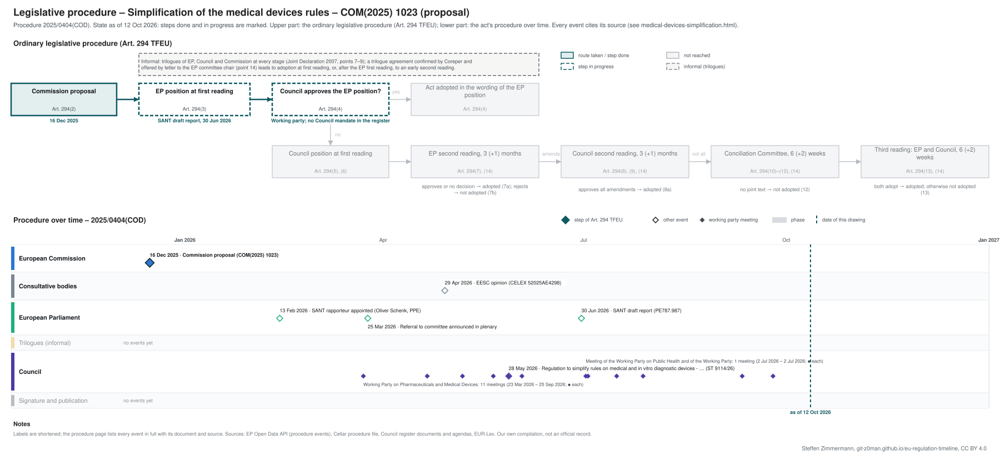

← Regulation timeline › Simplification of the medical devices rules › Legislative procedure · All procedures
Simplification of the medical devices rules – COM(2025) 1023 (proposal)
Procedure 2025/0404(COD), ongoing, as of 28 Oct 2026. Drawing: SVG · PNG · PDF (A3) · draw.io · Page as Markdown: medical-devices-simplification.md


| Stage | EP committee stage |
|---|---|
| Parliament | draft report 30 Jun 2026 |
| Council | working party, latest document 20 Oct 2026 |
| Latest activity | 27 Oct 2026 · Council: Working Party on Pharmaceuticals and Medical Devices: = Exchange of views on the third compromise proposed by … (CM 4464/26 REV 2) |
| Next steps | 14 Dec 2026: Indicative plenary sitting date, 1st reading (EP forecast); EP: amendments and committee vote on the report and mandate; Council: working party towards a negotiating mandate |

European Parliament committees
| Committee | Role | Rapporteur | Shadow rapporteurs |
|---|---|---|---|
| SANT Public Health | Responsible | Oliver Schenk (EPP), appointed 13 Feb 2026 | Tiemo Wölken (S&D), Laurent Castillo (PfE), Ruggero Razza (ECR), Andreas Glück (Renew), Ignazio Roberto Marino (Greens/EFA), Valentina Palmisano (The Left), Christine Anderson (ESN) |
| IMCO Internal Market and Consumer Protection | Opinion | Anna Cavazzini (Greens/EFA), appointed 15 Oct 2026 | Henrik Dahl (EPP), Marlena Maląg (ECR), Cynthia Ní Mhurchú (Renew) |
| BUDG Budgets | Budgetary assessment | Hélder Sousa Silva (EPP), appointed 8 Apr 2026 | Nicolae Ștefănuță (Greens/EFA) |
Source: EP Open Data API (participations) and the Legislative Observatory (joint committee, opinions declined); names link to each Member's page on the EP website. The API names no committee for shadow rapporteurs; they are assigned by the EP's order of participants, which groups each committee.
Events
| Date | Actor | Event | Document | Source |
|---|---|---|---|---|
| 16 Dec 2025 | European Commission | Commission proposal (Art. 294(2) TFEU) | COM(2025) 1023 · en.md de.md | Cellar (CELEX 52025PC1023) |
| 13 Feb 2026 | European Parliament | SANT rapporteur appointed (Oliver Schenk, PPE) | EP procedure file | EP Open Data API, procedure 2025-0404 (participation RAPPORTEUR) |
| 23 Mar 2026 | Council | Working Party on Pharmaceuticals and Medical Devices: Examination of cluster 1 of the proposal – scope, UDI … | CM 2027/26 | Council register, CM 2027/26 (notice of meeting and provisional agenda) |
| 25 Mar 2026 | European Parliament | Referral to committee announced in plenary | EP procedure file | EP Open Data API, procedure 2025-0404 (referral) |
| 21 Apr 2026 | Council | Working Party on Pharmaceuticals and Medical Devices: Examination of cluster 2 of the proposal – Support to … | CM 2298/26 | Council register, CM 2298/26 (notice of meeting and provisional agenda) |
| 29 Apr 2026 | Consultative bodies | EESC opinion | CELEX 52025AE4298 | Cellar procedure file 2025/404 |
| 7 May 2026 | Council | Working Party on Pharmaceuticals and Medical Devices: Examination of cluster 3 of the proposal – notified … | CM 2622/26 | Council register, CM 2622/26 (notice of meeting and provisional agenda) |
| 21 May 2026 | Council | Working Party on Pharmaceuticals and Medical Devices: Examination of cluster 4 of the proposal – Post-market … | CM 2822/26 | Council register, CM 2822/26 (notice of meeting and provisional agenda) |
| 28 May 2026 | Council | Regulation to simplify rules on medical and in vitro diagnostic devices - Progress report | ST 9114/26 · en.md | Cellar procedure file 2025/404 (Council register) |
| 28 May 2026 | Council | Working Party on Pharmaceuticals and Medical Devices: Examination of cluster 5 of the proposal – Placing on … | CM 2909/26 | Council register, CM 2909/26 (notice of meeting and provisional agenda) |
| 3 Jun 2026 | Council | Working Party on Pharmaceuticals and Medical Devices: Examination of cluster 6 of the proposal – Interplay … | CM 3008/26 REV 1 | Council register, CM 3008/26 REV 1 (notice of meeting and provisional agenda) |
| 30 Jun 2026 | European Parliament | SANT draft report | PE787.987 · en.md de.md | EP Open Data API, procedure 2025-0404 (committee tabling report) |
| 2 Jul 2026 | Council | Meeting of the Working Party on Public Health and of the Working Party: 2. Presentation of the Presidency … | CM 3277/26 | Council register, CM 3277/26 (notice of meeting and provisional agenda) |
| 3 Jul 2026 | Council | Working Party on Pharmaceuticals and Medical Devices: cluster 2 – Exchange of views (document to be … | CM 3278/26 | Council register, CM 3278/26 (notice of meeting and provisional agenda) |
| 16 Jul 2026 | Council | Working Party on Pharmaceuticals and Medical Devices: cluster 3 and 4 – Exchange of views = Block 1 – … | CM 3481/26 | Council register, CM 3481/26 (notice of meeting and provisional agenda) |
| 28 Jul 2026 | Council | Working Party on Pharmaceuticals and Medical Devices: Exchange of views = Clusters 3 and 4, Block 3 – … | CM 3725/26 | Council register, CM 3725/26 (notice of meeting and provisional agenda) |
| 11 Sep 2026 | Council | Working Party on Pharmaceuticals and Medical Devices: Exchange of views on the first Presidency compromise … | CM 3836/26 REV 1 | Council register, CM 3836/26 REV 1 (notice of meeting and provisional agenda) |
| 25 Sep 2026 | Council | Working Party on Pharmaceuticals and Medical Devices: Exchange of views on the second Presidency compromise … | CM 4059/26 | Council register, CM 4059/26 (notice of meeting and provisional agenda) |
| 27 Oct 2026 | Council | Working Party on Pharmaceuticals and Medical Devices: = Exchange of views on the third compromise proposed by … | CM 4464/26 REV 2 | Council register, CM 4464/26 REV 2 (notice of meeting and provisional agenda) |
| 27 Oct 2026 | Council | Working Party on Pharmaceuticals and Medical Devices: = Exchange of views on the third compromise proposed by … | CM 4464/26 REV 3 | Council register, CM 4464/26 REV 3 (notice of meeting and provisional agenda) |
Documents
Every document the Council register, the EU database of the Parliament of Austria or the EP lists for the procedure, with its state: public documents link to the official file; documents that are not public link to their entry in the Austrian database where there is one (metadata only). Status: public; not public; not public, leak available (an unofficial copy is known to circulate outside the institutions; it is neither published nor quoted here). Released: when a document listed as not public was released, by the date of the Council's public PDF (a technical date) or else the day our daily check found it public.
| Date | Document | Kind | Subject | Status | Released | Text |
|---|---|---|---|---|---|---|
| 7 Jan 2026 | WK 74/26 | Council note | Consolidated version of proposed amendments to the MDR Regulation (Articles) | not public* | – | – |
| 7 Jan 2026 | WK 79/26 | Council note | Consolidated version of proposed amendments to the IVDR Regulation (Articles) | public | – | – |
| 12 Jan 2026 | WK 341/26 | Council note | Flash from the Presidency for the Working Party on Pharmaceuticals and Medical Devices on 14 January 2026 | public | – | – |
| 14 Jan 2026 | WK 345/26 | Council note | Presentation by the Commission on the Regulation to simplify rules on medical and in vitro diagnostic devices | not public* | – | – |
| 9 Feb 2026 | ST 6148/26 | Council note | Attendance of a third party at the Working Party on Pharmaceuticals and Medical Devices on 13 February 2026 - Approval | not public* | – | – |
| 13 Feb 2026 | WK 2385/26 | Council note | Commission presentation on Staff Working Documents on the Targeted Evaluation and on Cost Savings | not public* | – | – |
| 9 Mar 2026 | WK 3284/26 | Council note | Presidency Flash for the Meeting of the Working Party on Pharmaceuticals and Medical Devices on 12 March 2026 | not public* | – | – |
| 12 Mar 2026 | WK 3870/26 | Council note | Planning and sequence of topics for the examination of the proposal | public | – | – |
| 12 Mar 2026 | WK 3916/26 | Council note | Presentation by the Commission | public | – | – |
| 13 Mar 2026 | ST 7161/26 | Council note | cluster 1 | public | – | – |
| 18 Mar 2026 | ST 16919/25 | Council note | Vorschlag für eine VERORDNUNG DES EUROPÄISCHEN parlaments und des rates zur Änderung der Verordnungen (EU) 2017/745 und (EU) 2017/746 zwecks Vereinfachung der … | public | – | – |
| 19 Mar 2026 | WK 4250/26 | Council note | Meeting of the Working Party on Pharmaceuticals and Medical Devices - Flash from the Presidency | not public* | – | – |
| 23 Mar 2026 | WK 4453/26 | Council note | Commission presentation | public | – | – |
| 30 Mar 2026 | ST 7252/26 | Council note | cluster 2 | not public* | – | – |
| 14 Apr 2026 | WK 4919/26 | Council note | Meeting of the Working Party on Pharmaceuticals and Medical Devices - Flash from the Presidency | not public* | – | – |
| 17 Apr 2026 | WK 5516/26 | Council note | Comments from Austria and other Member States | public | – | – |
| 21 Apr 2026 | WK 5589/26 | Council note | Regulation to simplify rules on medical and in vitro diagnostic devices - Commission presentation on cluster 2 - Support to the regulatory system | public | – | – |
| 27 Apr 2026 | ST 7253/26 | Council note | cluster 3 | public | – | – |
| 29 Apr 2026 | CELEX 52025AE4298 | Opinion | Opinion of the European Economic and Social Committee – Proposal of the European Parliament and of the Council amending Regulations (EU) 2017/745 and (EU) … | public | – | – |
| 30 Apr 2026 | WK 6200/26 | Council note | Meeting of the Working Party on Pharmaceuticals and Medical Devices - Flash from the Presidency | not public* | – | – |
| 4 May 2026 | ST 8808/26 | Council note | Opinion on the application of the Principles of Subsidiarity and Proportionality - Cover note from the Italian Chamber of Deputies | not public* | – | – |
| 6 May 2026 | WK 6461/26 | Council note | Comments from Austria and other Member States on Cluster 2 | public | PDF replaced 27 Oct 2026 | – |
| 7 May 2026 | WK 6502/26 | Council note | Regulation to simplify rules on medical and in vitro diagnostic devices - Commission presentation on cluster 3 - Notified bodies, classification and conformity … | public | – | – |
| 12 May 2026 | ST 7254/26 | Council note | cluster 4 | not public* | – | – |
| 18 May 2026 | WK 6846/26 | Council note | Meeting of the Working Party on Pharmaceuticals and Medical Devices - Flash from the Presidency | public | – | – |
| 19 May 2026 | ST 9402/26 | Council note | Opinion of the European Economic and Social Committee (EESC) | public | – | – |
| 19 May 2026 | ST 9417/26 | Council note | Reasoned opinion on the application of the Principles of Subsidiarity and Proportionality - Cover note from the French Senate | not public* | – | – |
| 21 May 2026 | ST 7255/26 | Council note | cluster 5 | not public* | – | – |
| 21 May 2026 | WK 7154/26 | Council note | Regulation to simplify rules on medical and in vitro diagnostic devices - Commission presentation on cluster 4 - Post-market surveillance, vigilance and … | public | – | – |
| 22 May 2026 | WK 7258/26 | Council note | Comments from delegations on cluster 3 | public | PDF replaced 27 Oct 2026 | – |
| 22 May 2026 | WK 7286/26 | Council note | Non-paper by Austria and other Member States on cybersecurity of medical devices | not public* | – | – |
| 26 May 2026 | WK 7379/26 | Council note | Meeting of the Working Party on Pharmaceuticals and Medical Devices - Flash from the Presidency | not public* | – | – |
| 28 May 2026 | ST 7256/26 | Council note | cluster 6 | not public* | – | – |
| 28 May 2026 | ST 9114/26 | Council: progress report | Regulation to simplify rules on medical and in vitro diagnostic devices - Progress report Our summary: Progress report of the Cyprus Presidency of 28 May 2026 on the proposal to simplify the Medical Devices and In Vitro Diagnostic Medical Devices Regulations, for Coreper to invite the Council to take note; it is not a Council position. Delegations welcome the aims of the proposal but see further work as necessary before a general approach, notably on the roles of the European Medicines Agency and the Medical Device Coordination Group, expert panels, well-established technologies, the oversight and fees of notified bodies, and the new powers of the Commission to amend definitions and annexes by delegated act. Several delegations support limiting the application of the AI Act to medical devices to avoid overlaps, some want to complement the sectoral powers to lay down AI requirements, and how far cybersecurity requirements of the Cyber Resilience Act should be reflected in the sectoral rules is still open. | public | – | en |
| 28 May 2026 | WK 7594/26 | Council note | Regulation to simplify rules on medical and in vitro diagnostic devices - Commission presentation on cluster 5 - Placing on the market and market surveillance | public | 23 Oct 2026 | – |
| 29 May 2026 | WK 7668/26 | Council note | Meeting of the Working Party on Pharmaceuticals and Medical Devices - Flash from the Presidency | not public* | – | – |
| 3 Jun 2026 | WK 7872/26 | Council note | Regulation to simplify rules on medical and in vitro diagnostic devices - Commission presentation on cluster 6 - Interplay with the AI Act, dedicated … | public | – | – |
| 10 Jun 2026 | WK 8221/26 | Council note | Comments from Member States on cluster 4 | public | PDF replaced 27 Oct 2026 | – |
| 12 Jun 2026 | ST 9801/26 | Council note | Verordnung zur Vereinfachung der Vorschriften über Medizinprodukte und In-vitro-Diagnostika – Fortschrittsbericht | public | – | – |
| 19 Jun 2026 | ST 10284/26 | Council note | Exchange of views | public | – | – |
| 19 Jun 2026 | ST 10876/26 | Council note | Opinion on the application of the Principles of Subsidiarity and Proportionality - Cover note from the Italian Senate | not public* | – | – |
| 19 Jun 2026 | WK 8980/26 | Council note | Comments from Austria and other Member States on cluster 5 | public | PDF replaced 27 Oct 2026 | – |
| 24 Jun 2026 | ST 10506/26 | Council note | Exchange of views | public | – | – |
| 24 Jun 2026 | ST 11046/26 | Council note | Opinion on the application of the Principles of Subsidiarity and Proportionality - Cover note from the Italian Senate | not public* | – | – |
| 25 Jun 2026 | WK 9297/26 | Council note | Meeting of the Working Party on Public Health and Working Party on Pharmaceuticals and Medical Devices - Flash from the Presidency | not public* | – | – |
| 26 Jun 2026 | WK 9147/26 | Council note | Comments from Austria and other Member States on cluster 6 | public | PDF replaced 27 Oct 2026 | – |
| 30 Jun 2026 | PE787.987 | EP draft report (rapporteur) | DRAFT REPORT on the proposal for a Regulation of the European Parliament and of the Council amending Regulations (EU) 2017/745 and (EU) 2017/746 as regards … Our summary: Draft report of 30 June 2026 by the rapporteur of the Committee on Public Health on the proposal to simplify the Medical Devices and In Vitro Diagnostic Medical Devices Regulations, with 131 amendments; the rapporteur's draft, not the position of the committee or of Parliament, and not law. No amendment touches the proposal's links to the AI Act and the Cyber Resilience Act: the move of both Regulations to Section B of Annex I of the AI Act and the reporting of actively exploited vulnerabilities and severe incidents to the CSIRTs and ENISA stay as proposed. Against the Commission text, the draft keeps more safeguards on clinical evidence, liability, implant cards and periodic safety reports, adds an insurance duty and a pathway for niche devices, gives expert panel opinions more weight in classification, limits the reopening of the regulatory status of CE-marked products and sets fixed deadlines for designating and monitoring notified bodies. None of the tracked concepts (high-risk suppliers, standardisation, product framework) is touched. | public | – | en de |
| 2 Jul 2026 | WK 9801/26 | Council note | Meeting of the Working Party on Pharmaceuticals and Medical Devices - Presentation by the Presidency | public | – | – |
| 8 Jul 2026 | ST 11243/26 | Council note | Exchange of views | public | 23 Oct 2026 | – |
| 8 Jul 2026 | ST 11244/26 | Council note | Exchange of views | public | 23 Oct 2026 | – |
| 9 Jul 2026 | ST 11546/26 | Council note | Exchange of views | public | 23 Oct 2026 | – |
| 10 Jul 2026 | ST 11549/26 | Council note | Exchange of views | public | 23 Oct 2026 | – |
| 13 Jul 2026 | WK 10415/26 | Council note | Meeting of the Working Party on Pharmaceuticals and Medical Devices - Flash from the Presidency | not public* | – | – |
| 16 Jul 2026 | WK 10612/26 | Council note | Meeting of the Working Party on Pharmaceuticals and Medical Devices - Presentation by the Presidency | public | – | – |
| 22 Jul 2026 | ST 11961/26 | Council note | Exchange of views | not public* | – | – |
| 22 Jul 2026 | WK 10843/26 | Council note | Meeting of the Working Party on Pharmaceuticals and Medical Devices - Flash from the Presidency | not public* | – | – |
| 28 Jul 2026 | PE791.887 | EP amendments | public status unknown | – | – | |
| 28 Jul 2026 | PE791.890 | EP amendments | public status unknown | – | – | |
| 28 Jul 2026 | PE791.891 | EP amendments | public status unknown | – | – | |
| 28 Jul 2026 | WK 10875/26 | Council note | Meeting of the Working Party on Pharmaceuticals and Medical Devices - Presentation by the Presidency | public | – | – |
| 28 Jul 2026 | WK 10875/26 ADD 1 | Council note | Meeting of the Working Party on Pharmaceuticals and Medical Devices - Presentation by the Presidency | not public* | – | – |
| 29 Jul 2026 | WK 11067/26 | Council note | Presentation by Germany | public | – | – |
| 28 Aug 2026 | ST 12272/26 | Council note | Exchange of views | not public* | – | – |
| 31 Aug 2026 | ST 12273/26 | Council note | Exchange of views | not public* | – | – |
| 2 Sep 2026 | ST 12287/26 | Council note | Exchange of views | public | 23 Oct 2026 | – |
| 3 Sep 2026 | WK 11070/26 | Council note | Meeting of the Working Party on Pharmaceuticals and Medical Devices - Flash from the Presidency | not public* | – | – |
| 7 Sep 2026 | WK 13494/26 | Council note | Regulation to simplify rules on medical and in vitro diagnostic devices - Technical input from the Commission’s services on the envisaged functioning of … | not public* | – | – |
| 16 Sep 2026 | ST 12698/26 | Council note | Exchange of views | not public* | – | – |
| 17 Sep 2026 | WK 14267/26 | Council note | Meeting of the Working Party on Pharmaceuticals and Medical Devices - Flash from the Presidency | not public* | – | – |
| 9 Oct 2026 | ST 12919/26 | Council note | Regulation to simplify rules on medical and in vitro diagnostic medical devices - Guidance for future work | not public* | – | – |
| 16 Oct 2026 | ST 13649/26 | Council note | Exchange of views | not public* | – | – |
| 16 Oct 2026 | ST 13649/26 ADD 1 | Council note | Exchange of views | not public* | – | – |
| 20 Oct 2026 | WK 16194/26 | Council note | Meeting of the Working Party on Pharmaceuticals and Medical Devices - Flash from the Presidency | not public* | – | – |
* Not public: the registers are checked again daily until the document is released; last check 28 Oct 2026.
Texts as Markdown
Unofficial Markdown conversions for reading, searching and project folders; only the official document is authentic. "Read" opens the rendered text on GitHub, where a link to a provision (#art-13, #rec-12, #annex-i) jumps to it.
| Date | Stage | Document | Markdown | Read |
|---|---|---|---|---|
| 16 Dec 2025 | Commission proposal | CELEX 52025PC1023 | en de | GitHub |
| 28 May 2026 | Council: progress report | ST 9114/26 | en | GitHub |
| 30 Jun 2026 | EP draft report (rapporteur) | PE787.987 | en de | GitHub |